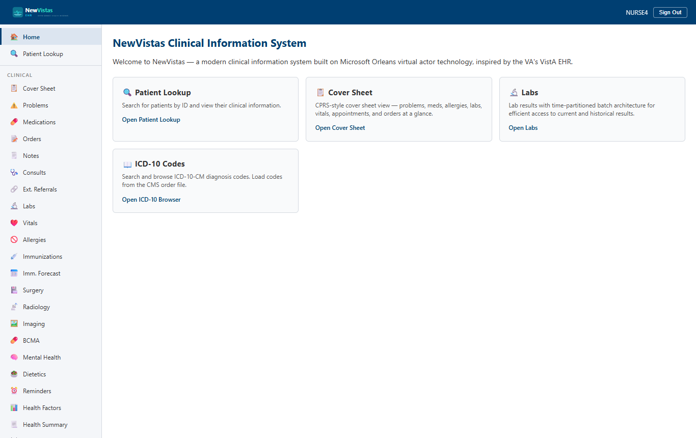

Manual › Nurse › Overview
Nurse Manual
Everything a nurse does in NewVistas — recording vital signs, documenting head-to-toe assessments, administering medications at the bedside, and handing off the patient at end of shift — with step-by-step walkthroughs and screenshots. The pages here mirror the Nursing section you see in your sidebar after signing in.

In this manual
Getting StartedSign in, navigate, and pull up a patient.
Vital SignsRecord the eight vitals and read the abnormal flags.
Nursing AssessmentHead-to-toe assessment with Braden and Morse scoring.
Shift HandoffSBAR report and the Draft → Completed → Acknowledged lifecycle.
BCMABar-code medication administration and the five rights.
Before you start
You'll need a nurse account (e.g.
NURSE1) and the system
running (SiloHost, WebServer, and the Blazor app). See
Getting Started.